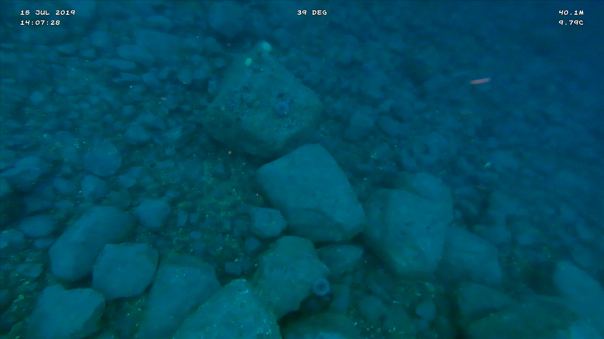

Hofsgrunn
Rannsóknarfólk: undirritaður og Arnar Viggósson náttúruunnandi. Hlekkur á möppu með myndskeiðum
Zodiak-bátur björgunarsveitar Skagastrandar var sjósettur í Kálfshamarsvík (sjá kort) og siglt var út í punkt á miðju Hofsgrunninu. Þar var Trident-kafbáturinn settur niður fimm sinnum.
Stöð 1, Stöð 1B, Stöð 2, Stöð 3, Stöð 4, Stöð 5.

Mynd 5.8: Stöð 1. Hrossaþara- eða stórþarabreiður (Laminaria digitata eða Laminaria hyperborea).

Mynd 5.9: Stöð 2,3,4. Hrossaþara- eða stórþarabreiður (Laminaria digitata eða Laminaria hyperborea).

Mynd 5.10: Stöð 5. Á 40 m dýpi er enginn þari.